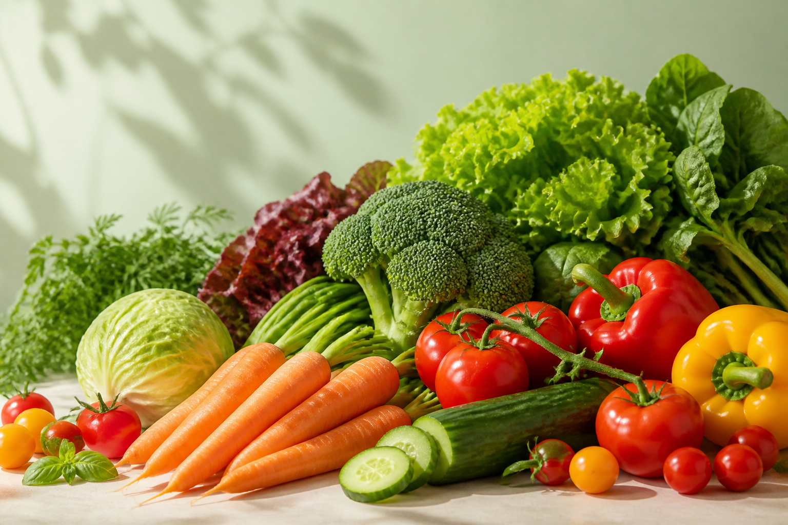
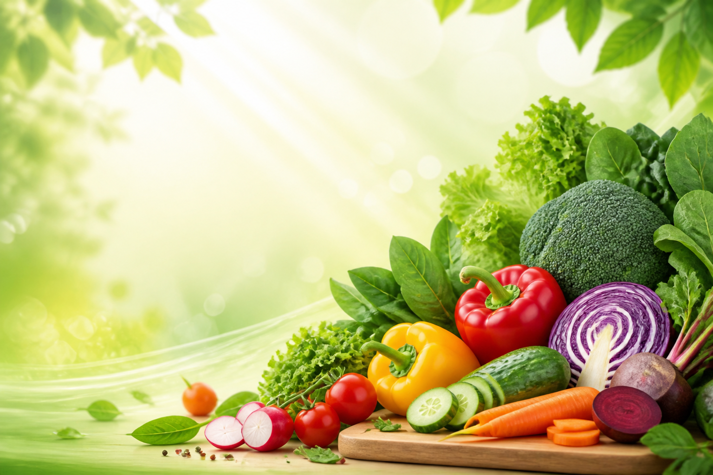
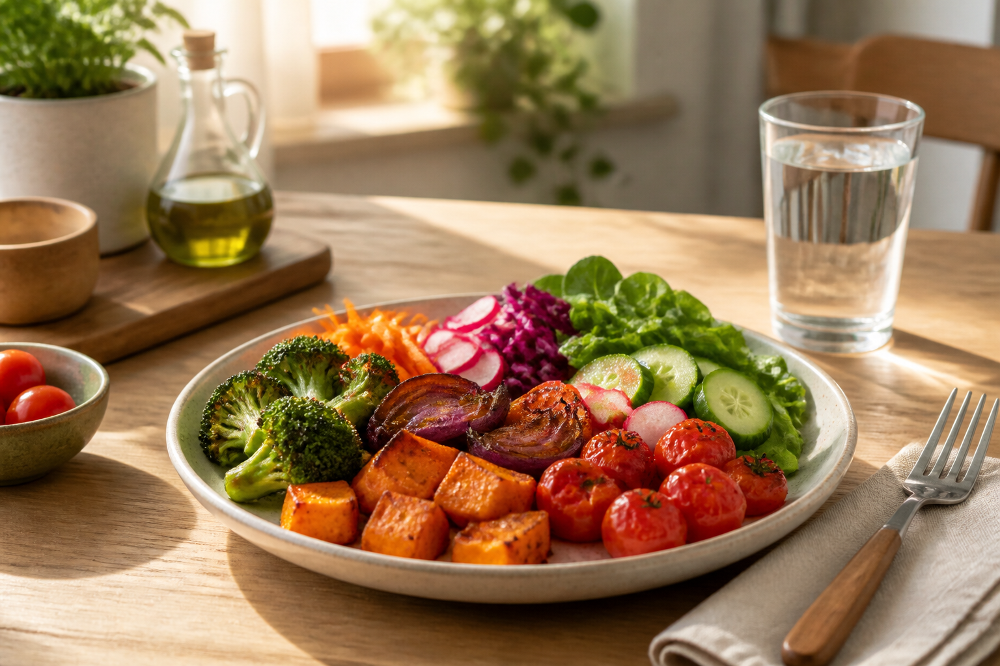

Здоровье · Питание · Энергия
Польза овощей
Простая ежедневная привычка, которая поддерживает энергию, иммунитет и самочувствие.

Здоровье · Питание · Энергия
Простая ежедневная привычка, которая поддерживает энергию, иммунитет и самочувствие.

Ключевые эффекты при регулярном употреблении

Простые шаги, которые легко удержать